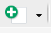
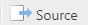

1 Lab 1 — September 15
1.1 Review of R basics
R is the name of the programming language. RStudio is the name of the integrated development environment (IDE). The application you should be running is RStudio.
If you do not already have these, R can be downloaded here. RStudio (desktop version) can be downloaded here. R should be installed before installing RStudio.
If you already have R installed on your device, ensure that the version is >= 4.0.0. Otherwise, use the links above to install the latest version.
1.1.1 Configure RStudio settings
The settings can be found under Tools -> Global Options....
Uncheck all boxes and modify all dropdowns that mention saving items upon exit and restoring items upon startup. This will ensure that RStudio starts with a fresh session each time.
1.1.2 Console pane
When the RStudio application is opened, the Console pane should occupy the entirety of the left side. (Open the below image in a new tab if it is too small)
Any code that is typed into the Console is evaluated immediately upon pressing Enter. If you need to evaluate multi-line code, Shift + Enter should be used to create line breaks.
The Console is often used to evaluate code that may not be part of your main analyses. This includes checking your work, testing code, modifying settings, etc.
1.1.3 Source pane
When the RStudio application is opened, the Source pane is hidden by default. The Source pane is where you modify your R scripts and type the main code of your analyses. It is strongly recommended that you save all your important code (code that you may need to revisit at a later date) inside a R script file. A new R script can be created using:
-
File -> New File -> R Script, or - Ctrl + Shift + N, or
- Clicking  and selecting "R Script"
The Source pane will appear in the top left when there is an open R script. (Open the below image in a new tab if it is too small)
Code that is typed in a script file is not evaluated upon pressing Enter. Code must be sent from the Source to the Console for evaluation.
- To run a single line of code, place the typing cursor anywhere on the line and press Ctrl + Enter.
- To run multiple lines of code, highlight the desired lines and press Ctrl + Enter.
- To run an entire script from start to finish, click  .
1.1.4 Environment pane
The Environment pane is the top right pane of RStudio. This pane shows all variables that have been initialised in your current R session. All variables in the current R session can be removed by clicking the broom icon. Alternatively, switching from Grid view to List view will allow you remove only selected variables.
1.1.6 Variables
Variables are created using the convention name <- value.
var1 <- 3Once a variable has been successfully initialised, it should appear in the Environment pane. For simple variables, the value of the variable can be seen in the Environment pane. For variables whose values are not visible in the Environment pane, their values can be checked by calling them in the Console:
var1## [1] 3or by using RStudio's built-in viewer by typing in the Console:
View(var1)When naming variables, try not to use names that already exist in R as data sets or functions. This
can be checked by partially typing the variable name and seeing what suggestions come up. For
example, when reading in data, do not name your variable data since there exists already exists
a data() function in R.
1.1.7 Vectors
Vectors are univariate data structures. Vectors can be created using the c() function with
elements separated by commas.
Note that in the example
var1 <- 3var1 is actually a vector of length 1.
When calling vectors in the Console, note that the numbers in the square brackets of the corresponding output represent the position number of the first element of the line.
var2 <- 1:30
var2## [1] 1 2 3 4 5 6 7 8 9 10 11 12 13 14 15 16 17 18 19 20 21 22 23 24 25
## [26] 26 27 28 29 301.1.7.1 Extracting elements
The elements of vectors can be extracted by supplying a vector of positive integers inside square brackets. Note that in R, indices begin at 1.
var2[7]## [1] 7
var2[c(2, 7, 9, 11, 20)]## [1] 2 7 9 11 201.1.7.2 Deleting elements
The elements of vectors can be deleted by supplying a vector of negative integers or by placing a negative outside a vector of positive integers, all inside square brackets. Note that in R, indices begin at 1.
var2[-7]## [1] 1 2 3 4 5 6 8 9 10 11 12 13 14 15 16 17 18 19 20 21 22 23 24 25 26
## [26] 27 28 29 30
var2[c(-2, -7, -9, -11, -20)]## [1] 1 3 4 5 6 8 10 12 13 14 15 16 17 18 19 21 22 23 24 25 26 27 28 29 30
var2[-c(2, 7, 9, 11, 20)]## [1] 1 3 4 5 6 8 10 12 13 14 15 16 17 18 19 21 22 23 24 25 26 27 28 29 301.1.8 Data frames
Data frames are multivariate data structures. Data frames can be thought of as a vertical concatentation of vectors. In most cases, each column of a data frame contains the values for a single variable and each row of a data frame contains the values of each variable for a single observation. For example, consider the following data set:
patients <- data.frame(
patient_id = c("123abc", "28fnr8", "02jr8d", "r82j45", "t90ro5"),
height = c(181, 145, 190, 210, 94),
mass = c(85, 72, 82, 90, 60),
sex = c("M", "F", "M", "F", "F")
)
patients## patient_id height mass sex
## 1 123abc 181 85 M
## 2 28fnr8 145 72 F
## 3 02jr8d 190 82 M
## 4 r82j45 210 90 F
## 5 t90ro5 94 60 FIn the example above, each column contains the values for a single variable and each row contains the values of each variable for a single observation (patient).
Things to note:
- Data frames can be created by supplying name-value pairs to the
data.frame()function. - Name-value pairs are supplied using
=rather than<-. - Each name-value pair must have the same length. Missing values can be represented using
NA.
1.1.8.1 Extracting columns
Columns of a data frame can be extracted as vectors using the dollar sign ($).
patients$height## [1] 181 145 190 210 94
patients$sex## [1] "M" "F" "M" "F" "F"1.1.8.2 Extracting rows and subsets
Thinking of data frames as matrices, which can be subsetted by supplying row and column positions/names separated by a comma within square brackets:
# Extract row 3 and all columns
patients[3, ]## patient_id height mass sex
## 3 02jr8d 190 82 M## patient_id mass
## 1 123abc 85
## 4 r82j45 90
## 5 t90ro5 60
# Extract rows 1, 4, and 5, and columns "patient_id" and "mass"
patients[c(1, 4, 5), c("patient_id", "mass")]## patient_id mass
## 1 123abc 85
## 4 r82j45 90
## 5 t90ro5 60## patient_id sex
## 1 123abc M
## 4 r82j45 F
## 5 t90ro5 F1.1.9 The working directory
The working directory is the folder path that you are working out of. The path of the current working directory can be found immediately underneath the Console tab heading.
When opening your first instance of RStudio using the application directly, the working directory is automatically set to the "Default working directory (when not in a project)". When the first instance of RStudio is opened by opening a R script file (files ending in .R), the working directory is automatically set to the location where the R script file is located.
Note that after opening your first instance of RStudio, any other scripts that are opened will not change the working directory.
The working directory is important to keep track of when reading and writing files. For the sake of organization, it may be the case that you have the following folder structure:
.
├── data
│ └── my_data.txt
├── output
│ ├── output1.txt
│ └── model.RDS
├── script1.R
└── script2.RThe dot represents where you currently are (the working directory).
In the example above, the R scripts are contained in the working directory, while data and output files have their own folders in the working directory. As such, when reading files we need to specify that they are to be read from the "data" folder. Similarly, when writing files, we need to specify that they are to be written into the "output" folder.
To be able to do this, we need to talk about file and folder paths and how to specify them.
1.1.10 Paths
A path is a string (i.e. needs to be surrounded by quotes) and describes the location of a file or folder on a device. Paths become extremely important when reading and writing files with R. Paths can be broken down into two categories: absolute and relative.
1.1.10.1 Absolute paths
An absolute path gives the full location of a file/folder on your device, irrespective of your current working directory, e.g.
"C:/Users/Adam/Desktop/blah.R"
"/Users/John/Documents/lab1.txt"The use of absolute paths creates a few problems.
Suppose that I am on Windows and include a path like
"C:/Users/Adam/Desktop/blah.R"in my script. If you were to execute the code that I have given you on a Windows machine, it would likely not work since your name is probably not Adam and yourblah.Rmay not be located on your Desktop like mine.For users that are not on Windows, in addition to the folders possibly not existing, you likely do not have a "C drive".
As such, the use of absolute paths is not recommended as it complicates the sharing of code between devices and is platform-dependent.
1.1.10.2 Relative paths
A relative path gives the partial location of a file/folder relative to your working directory. Although the use of relative paths still assumes an identical partial folder structure, it does not assume an identical folder structure down to the root of the path.
There are two helpers for specifying relative paths: the dot, ".", and the double-dot, "..". The
dot, ".", can be thought of as shorthand for "here", or the current working directory. The
double-dot, "..", means to "go up one level".
Example 1:
Suppose that my working directory is "C:/Users/Adam/Desktop" with structure:
C:/Users/Adam/Desktop **you are here**
│
├── my_data.txt
└── script1.RInside script1.R, I want to read the data found in my_data.txt. This can be done using:
my_data <- read.table("my_data.txt")
## OR ##
my_data <- read.table("./my_data.txt")rather than using:
my_data <- read.table("C:/Users/Adam/Desktop/my_data.txt")Example 2:
Suppose that my working directory is "C:/Users/Adam/Desktop/model" with surrounding folder
structure:
C:/Users/Adam/Desktop
│
├── data
│ └── my_data.txt
├── model **you are here**
│ ├── output1.txt
│ └── model.R
├── output
│ ├── output1.txt
│ └── output2.RDS
└── other.RInside model.R, I want to read the data found in my_data.txt. This can be done using:
my_data <- read.table("../data/my_data.txt")rather than using:
my_data <- read.table("C:/Users/Adam/Desktop/data/my_data.txt")1.1.11 Reading in data
In this course, most (if not all) data will be read in from a .txt file that has a header. The
code you will use will be:
my_data <- read.table("path/to/data/file.txt", header=TRUE)In some instances, we may need:
my_data <- read.table("path/to/data/file.txt", header=TRUE, stringsAsFactors=TRUE)1.2 Introduction to simple linear regression
Note: the content contained in the following sections will aid you in answering Assignment 1 Question 5.
1.2.1 Loading the data
The data set that we will be using can be found in the file named table1.1_DS.txt. Since this is
a text file with a header, we will use read.table() to read it in and specify header=TRUE.
My data is contained in a folder called "data" in my current working directory. The path you use to read your data will depend on where you have saved your data.
table1.1 <- read.table("./data/table1.1_DS.txt", header=TRUE)We can get the dimensions of this data set using the functions dim(), ncol(), and nrow().
dim(table1.1)## [1] 25 2
ncol(table1.1)## [1] 2
nrow(table1.1)## [1] 25We can get the column names of our data set using the names() function.
names(table1.1)## [1] "y" "x"We can preview the data we have read in using the head() function. The head function is useful
especially for larger data sets where printing the entire data set may not be desirable. By
default, this function will return the first six rows of the data.
head(table1.1)## y x
## 1 10.98 35.3
## 2 11.13 29.7
## 3 12.51 30.8
## 4 8.40 58.8
## 5 9.27 61.4
## 6 8.73 71.3We can also use RStudio's built-in object viewer to view the full data set. In the Environment pane:
- In List view, click the row corresponding to the variable containing the data.
- In Grid view, click the row corresponding to the variable containing the data under the "Value" heading.
Alternatively, you can use the View() function:
View(table1.1)1.2.2 Creating the data manually
In Assignment 1 Question 5, you are given the data as ordered pairs that you will need to manually
enter into R. Using the first ten observations from table1.1 as an example, we can create the
data frame manually:
table1.1_manual <- data.frame(
y = c(10.98, 11.13, 12.51, 8.40, 9.27, 8.73, 6.36, 8.50, 7.82, 9.14),
x = c(35.3, 29.7, 30.8, 58.8, 61.4, 71.3, 74.4, 76.7, 70.7, 57.5)
)
head(table1.1_manual)## y x
## 1 10.98 35.3
## 2 11.13 29.7
## 3 12.51 30.8
## 4 8.40 58.8
## 5 9.27 61.4
## 6 8.73 71.3(I will continue using the full Table 1.1 for the demonstrations below).
1.2.3 Fitting the SLR model
Linear regression models are fit using the lm() function. We first need to fit the model
\[Y_{i} \,=\, \beta_{0} \,+\, \beta_{1}X_{i} \,+\, \varepsilon_{i}, \quad i=1,\ldots,n\]
in order to determine whether
\[Y_{i} \,=\, \beta_{0} \,+\, \varepsilon_{i}, \quad i=1,\ldots,n\]
is an appropriate model.
slr_model <- lm(y ~ x, data=table1.1)The above code says to build a linear regression model using y as the dependent (response)
variable, x as the independent (predictor) variable, and that the variables y and x are
found within the table1.1 data variable.
1.2.4 Inspecting the model
We can obtain a summary of our linear regression model by using the summary() function.
summary(slr_model)##
## Call:
## lm(formula = y ~ x, data = table1.1)
##
## Residuals:
## Min 1Q Median 3Q Max
## -1.6789 -0.5291 -0.1221 0.7988 1.3457
##
## Coefficients:
## Estimate Std. Error t value Pr(>|t|)
## (Intercept) 13.62299 0.58146 23.429 < 2e-16 ***
## x -0.07983 0.01052 -7.586 1.05e-07 ***
## ---
## Signif. codes: 0 '***' 0.001 '**' 0.01 '*' 0.05 '.' 0.1 ' ' 1
##
## Residual standard error: 0.8901 on 23 degrees of freedom
## Multiple R-squared: 0.7144, Adjusted R-squared: 0.702
## F-statistic: 57.54 on 1 and 23 DF, p-value: 1.055e-07From the information above, our fitted regression line has equation:
\[\widehat{y}_{i} \,=\, 13.62 \,-\, 0.08x_{i} \quad i=1,\ldots,n\]
1.2.5 Is an intercept-only model appropriate?
To determine whether an intercept-only model would be appropriate, we need to test the hypotheses:
\[H_{0}: \beta_{1} \,=\, 0, \quad H_{A}: \beta_{1} \,\neq\, 0\]
The value of the test statistic can be read off the summary table and has a value of -7.586 and
a corresponding \(p\)-value of 1.05e-07. Using a significance level of \(\alpha = 0.05\), since
the \(p\)-value is less than \(\alpha\), we reject the null hypothesis and conclude that there is
evidence to support the claim that \(\beta_{1}\) is different from zero.
As such, we should not consider the intercept-only model.
But what if the \(p\)-value was greater than \(\alpha = 0.05\) and we failed to reject the null hypothesis? How would we fit an intercept-only model?
Aside: note that on the (Intercept) row, the t-value and \(p\)-value correspond to the testing of
the hypotheses:
\[H_{0}: \beta_{0} \,=\, 0, \quad H_{A}: \beta_{0} \,\neq\, 0\]
1.2.6 The rock data set
To fit an intercept-only model, let us consider the rock data set that is built into R. This data
set can be loaded using:
data(rock)We can preview the data as usual:
head(rock)## area peri shape perm
## 1 4990 2791.90 0.0903296 6.3
## 2 7002 3892.60 0.1486220 6.3
## 3 7558 3930.66 0.1833120 6.3
## 4 7352 3869.32 0.1170630 6.3
## 5 7943 3948.54 0.1224170 17.1
## 6 7979 4010.15 0.1670450 17.11.2.7 Fitting a SLR
Let's create a simple linear regression model using area as the dependent (response) variable and
shape as the independent (predictor) variable.
##
## Call:
## lm(formula = area ~ shape, data = rock)
##
## Residuals:
## Min 1Q Median 3Q Max
## -6101.6 -1512.3 104.6 1765.3 5152.9
##
## Coefficients:
## Estimate Std. Error t value Pr(>|t|)
## (Intercept) 8465 1087 7.788 6.08e-10 ***
## shape -5855 4660 -1.256 0.215
## ---
## Signif. codes: 0 '***' 0.001 '**' 0.01 '*' 0.05 '.' 0.1 ' ' 1
##
## Residual standard error: 2667 on 46 degrees of freedom
## Multiple R-squared: 0.03318, Adjusted R-squared: 0.01216
## F-statistic: 1.579 on 1 and 46 DF, p-value: 0.2153The equation of the fitted line is:
\[\widehat{y}_{i} \,=\, 8465 \,-\, 5855x_{i}, \quad i=1,\ldots,n\]
Testing the hypotheses:
\[H_{0}: \beta_{1} \,=\, 0, \quad H_{A}: \beta_{1} \,\neq\, 0\]
the corresponding \(p\)-value is 0.215. Using a significance level of \(\alpha = 0.05\), since the \(p\)-value is greater than 0.05, we fail to reject the null hypothesis. As such, there is insufficient evidence to support the claim that \(\beta_{1}\) is non-zero.
Now let's fit the intercept-only model!
1.2.8 Fitting an intercept-only model
One way of fitting the intercept-only model is to use lm() again.
rock_intercept_model <- lm(area ~ 1, data=rock)The dependent (response) variable remains area, but the right-hand side of the formula will just
be 1 to indicate the intercept.
The second way of fitting the intercept-only model is to take advantage of the fact that we already
built a simple linear regression model (rock_slr_model) and to obtain the intercept-only model we
just need to "remove" the shape variable from the formula specification. This can be accomplished
by using the update() function.
rock_intercept_model <- update(rock_slr_model, formula = . ~ . - shape)In the formula specification above, the . refers to "everything that was already there". As such,
the . on the left of the ~ refers to area, while the . on the right of the ~ refers to
1 + shape (the 1 is not usually written since all linear regression models are fit with an
intercept by default, but it still exists!). Therefore, the above code says that the
rock_intercept_model will be an "update" of the rock_slr_model with the modification that the
formula will now be area ~ 1 + shape - shape, resulting in area ~ 1. We can check that this was
exactly what we wanted by calling:
formula(rock_intercept_model)## area ~ 1The update() function will be extremely useful when we start working with multiple linear
regression models and variable selection procedures later on in the course as it is sometimes
easier to specify the variables that we don't want rather than all the ones that we do want.
summary(rock_intercept_model)##
## Call:
## lm(formula = area ~ 1, data = rock)
##
## Residuals:
## Min 1Q Median 3Q Max
## -6171.7 -1882.5 299.3 1681.8 5024.3
##
## Coefficients:
## Estimate Std. Error t value Pr(>|t|)
## (Intercept) 7187.7 387.4 18.55 <2e-16 ***
## ---
## Signif. codes: 0 '***' 0.001 '**' 0.01 '*' 0.05 '.' 0.1 ' ' 1
##
## Residual standard error: 2684 on 47 degrees of freedomFrom the output above, the equation of the fitted line is:
\[\widehat{y}_{i} \,=\, 7187.7, \quad i=1,\ldots,n\]
1.2.9 Visualising the intercept-only fit
We can draw a scatterplot of the data with area on the y-axis and shape on the x-axis, and
overlay the intercept-only fit. When drawing lines with base-R graphics, recall that we need to sort
the x-values!
The fitted values of the intercept-only model can be obtained by wrapping it in the fitted()
function.
fitted(rock_intercept_model)## 1 2 3 4 5 6 7 8
## 7187.729 7187.729 7187.729 7187.729 7187.729 7187.729 7187.729 7187.729
## 9 10 11 12 13 14 15 16
## 7187.729 7187.729 7187.729 7187.729 7187.729 7187.729 7187.729 7187.729
## 17 18 19 20 21 22 23 24
## 7187.729 7187.729 7187.729 7187.729 7187.729 7187.729 7187.729 7187.729
## 25 26 27 28 29 30 31 32
## 7187.729 7187.729 7187.729 7187.729 7187.729 7187.729 7187.729 7187.729
## 33 34 35 36 37 38 39 40
## 7187.729 7187.729 7187.729 7187.729 7187.729 7187.729 7187.729 7187.729
## 41 42 43 44 45 46 47 48
## 7187.729 7187.729 7187.729 7187.729 7187.729 7187.729 7187.729 7187.729Now, making the plot:
sorted_shape <- sort(rock$shape)
plot(area ~ shape, data=rock, main="Intercept-only model")
lines(x=sorted_shape, y=fitted(rock_intercept_model), col="darkred", lwd=2)1.2.10 Visual diagnostics
1.2.10.1 The residual vs. predictor plot
To identify potential issues with the intercept-only model, we can make of plot of the residuals,
\(e_{i} \,=\, Y_{i} \,-\, \widehat{Y}_{i}\), against the the predictor values (shape).
The residual values of the intercept-only model can be obtained by wrapping it in the resid()
function.
resid(rock_intercept_model)## 1 2 3 4 5 6 7
## -2197.7292 -185.7292 370.2708 164.2708 755.2708 791.2708 2145.2708
## 8 9 10 11 12 13 14
## 1021.2708 1205.2708 -762.7292 2176.2708 1436.2708 3463.2708 1680.2708
## 15 16 17 18 19 20 21
## 2229.2708 1686.2708 3774.2708 3555.2708 4690.2708 2679.2708 650.2708
## 22 23 24 25 26 27 28
## 4688.2708 5024.2708 1045.2708 -827.7292 -2994.7292 228.2708 -1941.7292
## 29 30 31 32 33 34 35
## -678.7292 -2292.7292 -412.7292 706.2708 -1207.7292 -1869.7292 204.2708
## 36 37 38 39 40 41 42
## 706.2708 -3718.7292 -5719.7292 -3663.7292 -1920.7292 -2139.7292 -6171.7292
## 43 44 45 46 47 48
## -1582.7292 1605.2708 -3712.7292 -5536.7292 -1673.7292 2530.2708Now, making the plot:
plot(
resid(rock_intercept_model) ~ shape, data=rock,
main="Residuals vs Predictor", xlab="shape", ylab="residuals"
)From the assumptions of linear regression, there should not be any discernable patterns/trends in the plotted points. From the plot above, there does not appear to be any patterns/trends in the plotted points.
1.2.10.2 Normality of residuals
We also have the assumption that residuals should be normally distributed. This can be checked by creating a QQ-plot of the residuals and overlaying a QQ-line.
To check if the normal distribution assumption has been satisfied, the plotted points should lie as close as possible to the QQ-line. As this is the case in the above plot, we have no reason to believe that the residuals are not normally distributed.
1.1.5 Comments
Comments can be added to an R script by prepending them with a
#symbol.